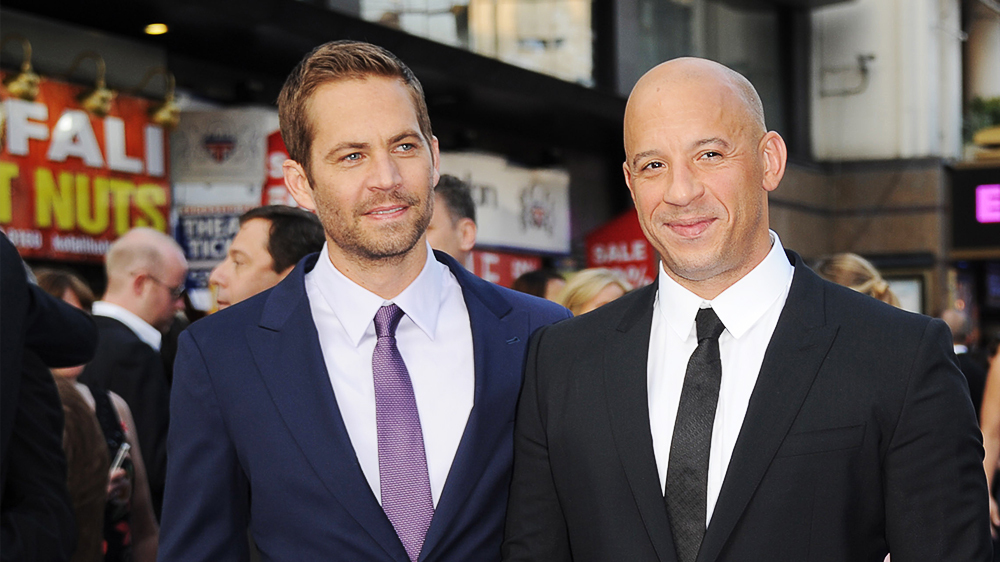

Paul Walker
A Famous Actor and An Icon to be Remembered

Paul Walker, Vin Diesel
- 1973 - Born in Glendale, California, and was the son of Cheryl (née Crabtree), a fashion model, and Paul William Walker III, a sewer contractor and boxer who was a two-time Golden Gloves champion.
- 1985 - He began modeling at the age of two and began working on television shows with roles in shows such as Highway to Heaven, Who's the Boss?, The Young and the Restless, and Touched by an Angel. That year he starred in a commercial for Showbiz Pizza
- 1986 - Began his movie career with the horror/comedy film Monster in the Closet
- 1987 - He appeared in The Retaliator (aka Programmed to Kill)
- 1991 - Attended high school in the San Fernando Valley, graduating from Sun Valley's Village Christian School
- 1993 - He played Brandon Collins on the CBS soap opera The Young and the Restless
- 1998 - Walker made his feature film debut in the comedy Meet the Deedles, which finally gained him fame
- 2001 - Walker's breakthrough role arrived when he starred opposite actor Vin Diesel in the successful action film The Fast and the Furious
- 2003 - The film established Walker as a notable film star and leading man and led to his reprise of the role in 2 fast 2 Furious
- 2004 - He continued his career with leading roles in films such as Joy Ride (2001), Timeline (2003), and Into the Blue (2005). Hehad a supporting role in Clint Eastwood's adaptation of Flags of Our Fathers (2006)
- 2006 - Walker then starred in the crime thriller Running Scared and Walt Disney Pictures' Eight Below
- 2008 - Walker starred in the independent film The Lazarus Project, which was released on DVD on October 21.
- 2009 - He subsequently returned to The Fast and the Furious franchise, reprising his role in Fast & Furious, which was releasedon April 3,
- 2010 - Walker went to Constitución, Chile, to offer his help and support to the people injured in the 8.8 magnitude earthquake that struck on February 27. He flew with his humanitarian aid team, Reach Out Worldwide, to Haiti to lend a helping hand to the 2010 Haiti earthquake victims, Walker then appeared in the crime drama Takers,which was released in August
- 2011 - The Coty Prestige fragrance brand Davidoff Cool Water for Men announced in January 2011, that Walker was going to be the new face of the brand as of July.
- 2011 - He reprised his role in the fifth installment of The Fast and the Furious series, Fast Five
- 2013 - He reprised his role in Fast & Furious 6 and He was part of an ensemble cast in Wayne Kramer's Pawn Shop Chronicles (2013), which was Walker's last film released before his death. He died On November 30
- 2014 - he won the 2014 MTV Movie Award as best on-screen duo, with Vin Diesel, At the time of his death, Walker had been filming Furious 7, which was slated for release in July 2014
Here's a time line of Paul Walker life:
"The Wiz Khalifa song "See You Again", featuring Charlie Puth, was commissioned for the Furious 7 soundtrack as a tribute to Walker. It was nominated for the Golden Globe for Best Original Song in 2015 and was the number-one song in the United States for 12 weeks"
"He was my brother"
-- Vin Diesel--